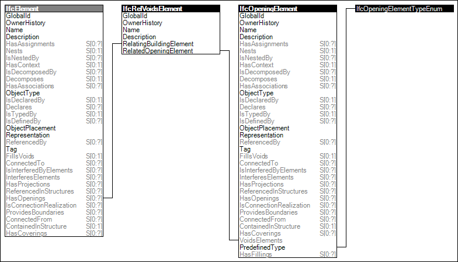

Link to this page
Link to this pageElements may have voids defined, which may be partial recess or extending full depth. Voids for openings may optionally be filled by another element such as a door or window, or may represent a voiding feature without fillings.
The 'Body' representation of an element does not account for voids, for which CSG operations are required to produce the resulting shape.
The 'Mesh' representation of an element does account for voids, such that no additional operations are required.
Figure 38 illustrates an instance diagram.
 |
Figure 38 — Element Voiding |
Examples: